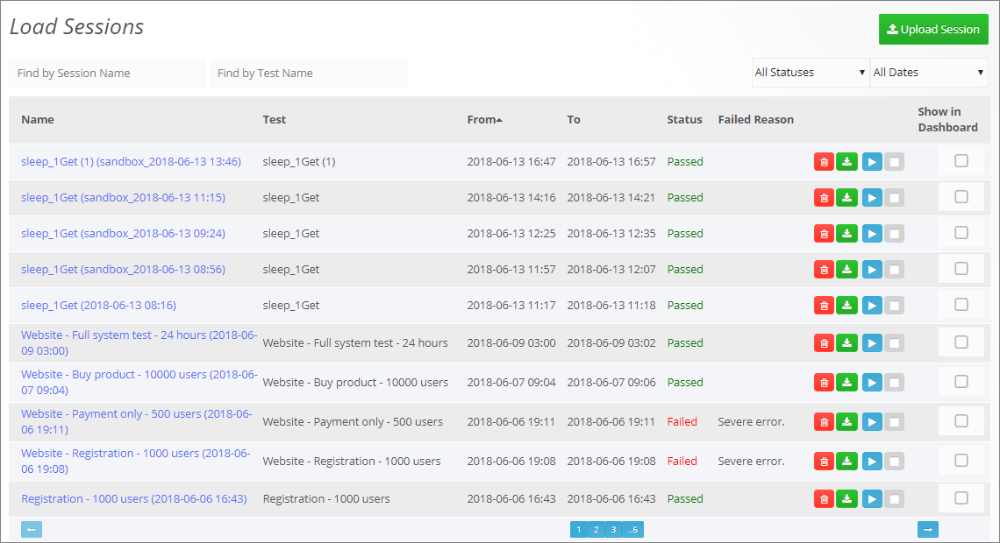
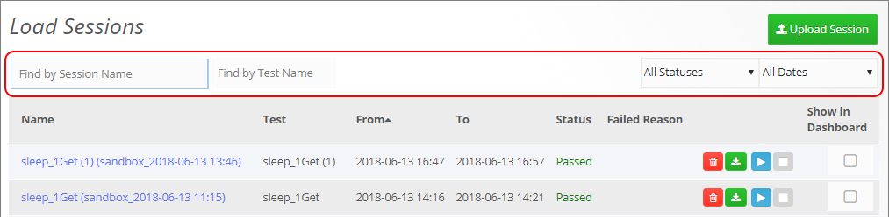
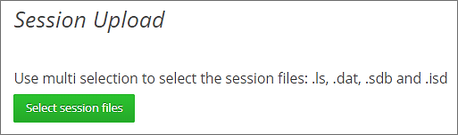

Managing Sessions
Viewing Load Sessions
In WebLOAD Dashboard, you can manage the following types of sessions:
- The sessions of load tests created and run in the WebLOAD Dashboard
- Sessions that were created in the WebLOAD Console and uploaded to the WebLOAD Dashboard. For instructions on how to upload sessions to the WebLOAD Dashboard, see Uploading a session (on page 30).
To view the load sessions:
- In the menu bar, select Sessions > Search.
The Load Sessions table appears.

The Load Sessions table provides the following information and available actions for each Load Session:
| Item | Description |
|---|---|
| Name | The name of the load session. Clicking the name opens the Dashboard page for this session, enabling you to view the results of this session. |
| Test | The name of the corresponding load test. |
| From | The date and time when the load session started running. |
| To | The date and time when the load session finished running. |
| Status | Whether the test passed or failed test execution. |
| Failed Reason | If the test failed, displays the reason for failure. |
 |
Instructs WebLOAD to delete this load session. |
| Instructs WebLOAD to download the session results to the local computer. The results are downloaded as a zip file that contains the following files: .ls, .mdb, .sdb, .isd, .dat. You can then open the session in WebLOAD Console or WebLOAD Analytics. | |
 |
Enables manually running a test created in WebLOAD Dashboard, now or at a specified time. Refer to Scheduling a one-time test run (on page 25). |
 |
Instructs WebLOAD to stop running the test. |
| Show in Dashboard | Enables specifying which sessions to display in the dashboard. This is very useful for comparing the statistics from multiple sessions. |
Filtering the Load Sessions display
You can filter the Load Sessions table display by:
- Session name, using the Find by Session Name box.
- Test name, using the Find by Test Name box.
- Test status, using the All Statuses drop-down box.
- Test date, using the All Dates drop-down box.

Uploading a session
You can upload to WebLOAD Dashboard, sessions that were created in the WebLOAD Console. Each session created in the WebLOAD Console consists of the following four types of files; to upload the session, you need to upload all four files:
- .ls - Load Session files
- .dat - Load Session data files
- .sdb - Statistics database files
- .isd - Index statistics database files
To upload a session:
-
Do one of the following:
-
In the menu bar, select Session > Upload
- In the Load Sessions table, click Upload Session
The Session Upload page is displayed.

-
Click Select session files.
-
In the file explorer dialog that appears, navigate to the load session's files, select them, and click Open.